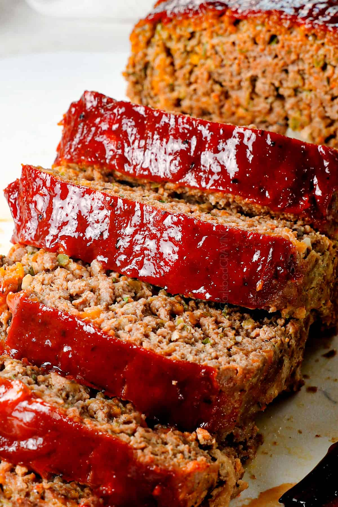

Mom's Meatloaf

About this recipe:
A Spaulding staple, as well as one of my favorite meals, get ready for some of the best meatloaf of your life;
Sweet and savory, with a brown sugar and ketchup dressing, this unique recipe is sure to be a new favorite!
Ingredients:
- 3 lbs ground beef
- 3 Tbsp. chopped onions
- 4 eggs
- Salt + Pepper
- 6 Tbsp. ketchup
- 1 cup milk
- 1 Tbsp. brown sugar
Steps:
- Mix all ingredients together
- Cover with ketchup + brown sugar
- Bake at 350º F. for 1 hour
- Serve.